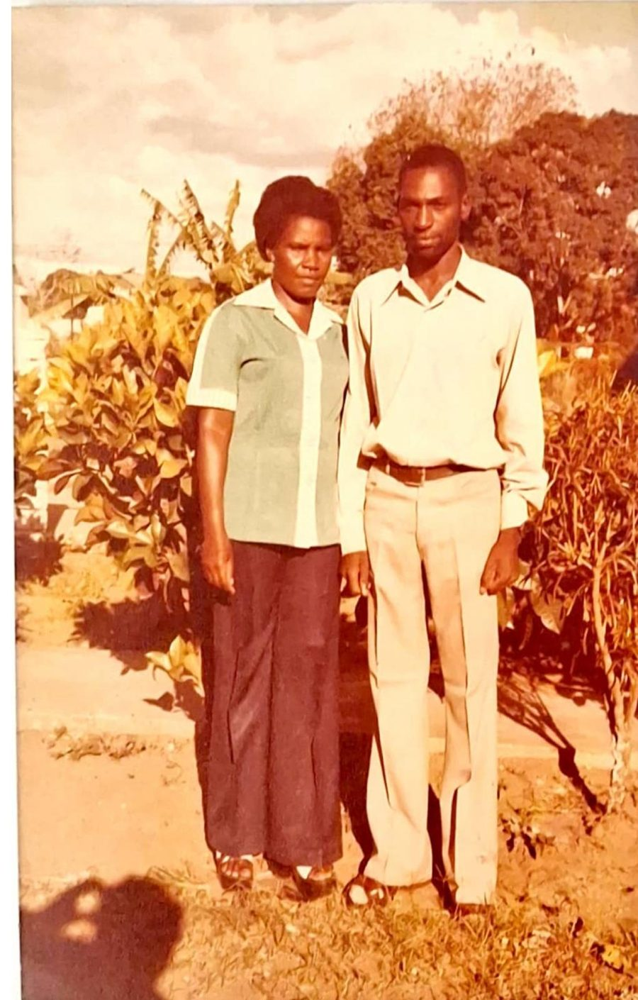
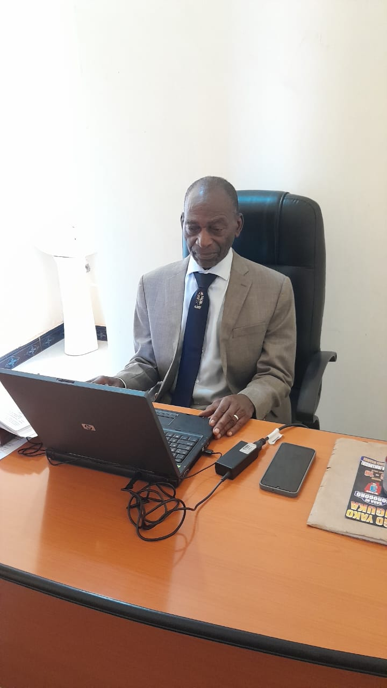
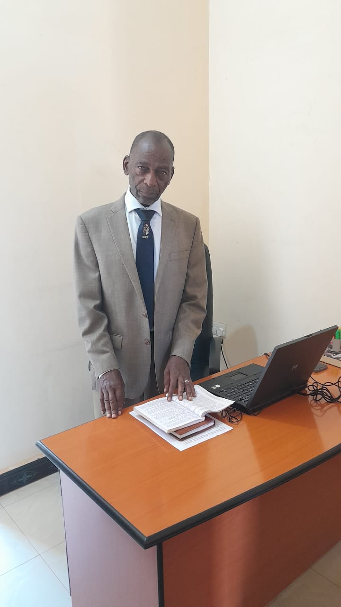
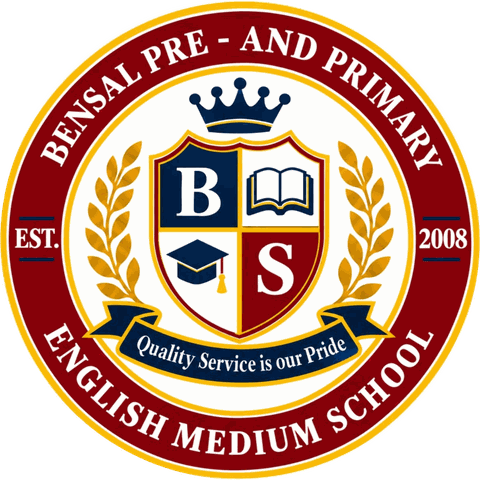

Our mission
To provide high-quality education and childcare in a nurturing, innovative and inclusive environment that builds a foundation for lifelong learning.
A family-founded school in Tubuyu, Tungi, Morogoro, teaching children from day care to Standard VII since 2008.
Bensal was started in 2008 by Professor Benedict Kayombo and Mrs. Salesia Kayombo. The idea was a school in Morogoro where children learn in English from the very start, are taught by well-qualified teachers, and are expected to do well.
Today Bensal includes a day care for children from two years old, a pre-primary section, and a full primary school from Standard I to Standard VII. The school is registered by the Ministry of Education, and with NECTA as an examination centre, so our pupils sit the national Standard IV and Standard VII exams here at Bensal.
The school has grown steadily. In 2019, 41 pupils sat the Standard VII exam. In 2025 it was 87.

Prof. Benedict Kayombo is the Executive Director of Bensal and one of its two founders. He started the school with Mrs. Salesia Kayombo in 2008 with a clear aim: a school in Morogoro where children learn in English from the very start, are taught by well-qualified teachers, and are expected to do well.
Today he heads the school’s leadership team. Working with the Deputy Director, Ms. Atuhuvye Kayombo, and the school’s managers, he oversees every part of Bensal, from the day care and pre-primary classes to Standard VII.
Under his leadership the school has grown steadily. Bensal is registered by the Ministry of Education and is a NECTA examination centre, 95% of its teachers hold degrees, and the Standard VII class has grown from 41 pupils in 2019 to 87 in 2025. In 2019, 2020, 2022, 2024 and 2025, every Standard VII pupil got an A or B in the national exam.


Everything we do comes back to one aim: building a bright future through quality education.
To provide high-quality education and childcare in a nurturing, innovative and inclusive environment that builds a foundation for lifelong learning.
To be a leading Pre & Primary School that inspires students to become lifelong learners and responsible global citizens.
We envision a vibrant school community where diversity is embraced, and every student is equipped with the skills and values necessary for future success in higher education, careers and life.
We are guided by integrity, driven by innovation, committed to excellence, fuelled by collaboration, accountable in our actions, and always focused on putting our students first.
Our core function is discipline, and then academics. Children who are well behaved and respectful are ready to learn, and our national exam results show what follows.
We build in every child a foundation of fearing God, each within their own religion. Families of all faiths are welcome, and children of different religions learn and play together every day.
95% of our teachers hold a university degree. We believe a well-trained teacher is the most important thing a school can give a child.
Parents expect quality service and a warm welcome from us, and that is what we aim to give every family. It’s in our motto: Quality Service is Our Pride.
From the directors to the classroom, this is who looks after what at Bensal.
The basics, in one place.

Quality Service is Our Pride
This website was made for Bensal by TZStudies, a Tanzanian education company.
On mytzstudies.com, pupils and students can get past national exam papers and answer keys for free, from Standard 1 to Form 4, in English and Kiswahili. It also helps families find a tutor.
With TZStudies Plus, students also get worked solutions, timed mock exams and Exam Intelligence, which shows the topics they find hardest so they know what to practise.
Visit mytzstudies.comThe best way to understand a school is to visit. We're happy to show you around.